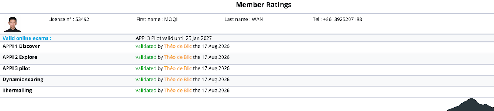

Before 1st Takeoff
People ask me if I feel fear in the skies. I don't. Fear only hits me the moment before my feet leave the ground.
For when you are in the air, the sensation of flying itself quells the fear of gravity. But when you are on the ground, with 20 kilograms of extra weight on your shoulders, that's when you so strongly realize the presence of gravity.
The whole process of takeoff is to fall, to overcome the fear of falling, to run down a 50-degree slope that leads down to a cliff. And you must charge down that slope, for hesitation would cause the paraglider to fail. Then the fall would be real.
So off you go, and wonder if the skies will catch your fall. Your feet will leave the ground at the end of the runway, and the sink will begin: 3 meters, 5 meters, 10 meters. And then you would wonder if this is a weekend in a hospital bed. Falling, until the sky catches you in its cradle. A jolt, and then you would soar over the trees.
That is the best moment of flying: one moment, you are falling; the next, you conclude that you are flying — the unreal thrill of leaving gravity contrasting with the fear that still lingers behind.


After 1st Solo Flight
But that fear remains, for despite how free the skies may feel to you, the slow descent will remind you that gravity will catch up with you, and then all the burdens of the world will take hold of you again. Which somehow makes you cherish this free flight more.
If there is any real thing that taking off has told me, it is that you must anticipate the fall before you would taste flight.
After Falling into the Ant Hole
Not every flight went smoothly.
There is a saying that my coaches have taught. In paragliding, only 2 things are certain: landing and the tree.
Landing means that after you take off, you will land, somehow, sooner or later.
The tree refers to any sort of accident while landing; landing on top of a tree is the most common and safest of all landing accidents. The nature of landing makes it dangerous.
In contrast with takeoff, landing is far less enjoyable. If you want to land, you'd have to stall the paraglider roughly 4 meters off the ground. Which means you would be semi-free-falling from almost a story tall. But if you don't choose to pull the break yourself, you end up landing harder.


My Pilot's License
APPI 3 Pilot, license no. 53492. All online exams validated on 17 Aug 2026, valid until 25 Jan 2027.
Ratings: APPI 1 Discover, APPI 2 Explore, APPI 3 Pilot, Dynamic Soaring, Thermalling.